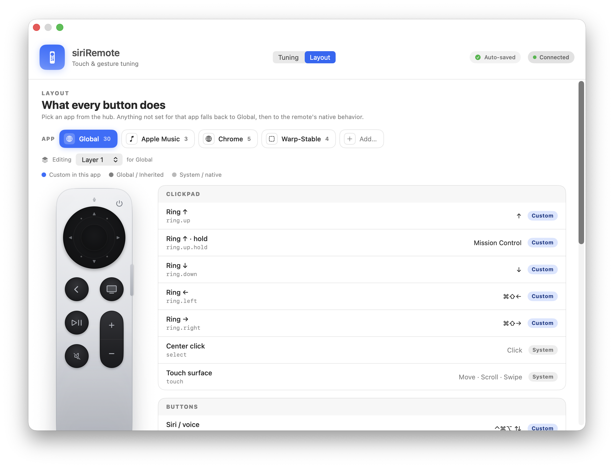
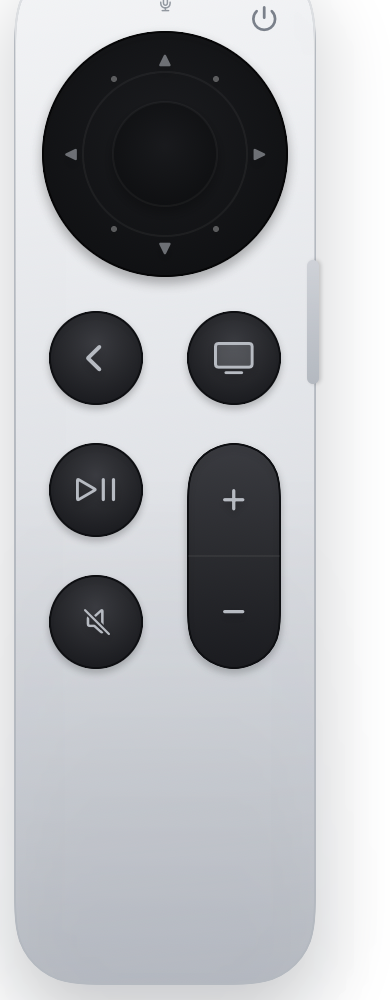
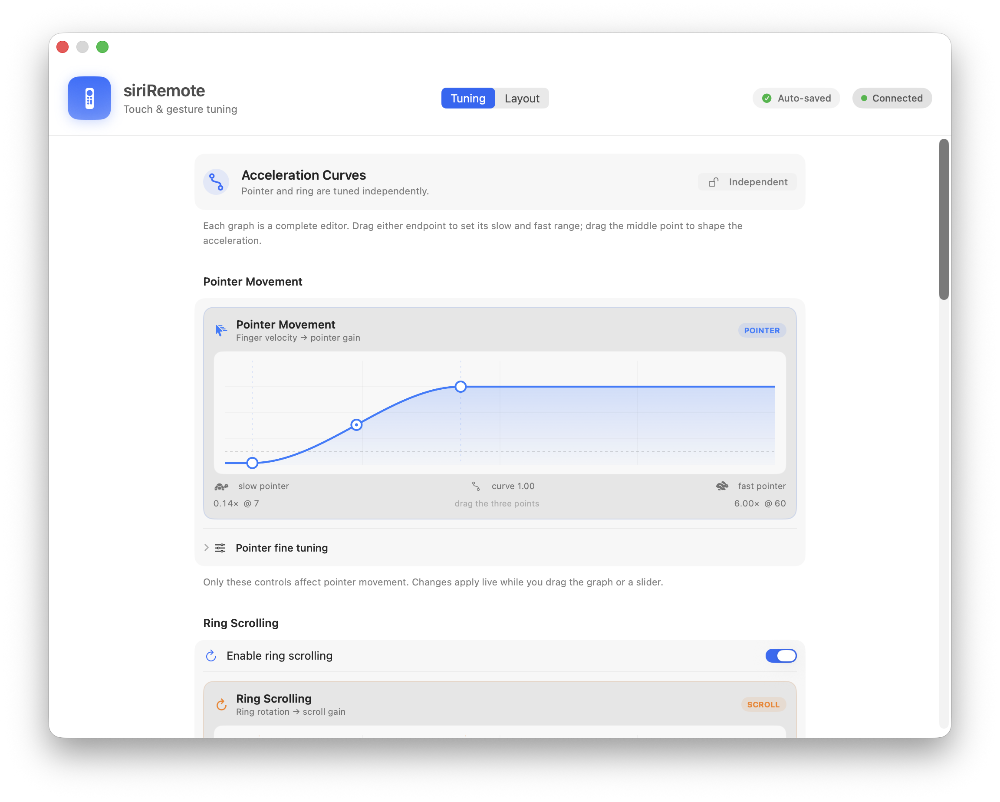

VOICE-ONLY
说完以后，输入链断了。
- 语音有
- 指针—
- 滚动—
- 点击 / 拖动—
- App 上下文—
macOS CONTROL LAYER
Siri Remote 的完整 macOS 输入层
按下侧键，语音立即开始；边说，文字边出现。说完以后也不必回到鼠标和触控板——移动、滚动、点击、拖动、切换 App 与 Layer，都留在同一只遥控器上。

THE MISSING HALF
很多 Web coding 工具把遥控器做成一支麦克风。内容生成后，移动光标、滚动页面、选择结果和切换窗口仍然需要回到电脑前。
WEB CODING
PRESENTATION
ACTION VOCABULARY
keystrokerepeatKeymousemedia发送完整快捷键、按住自动重复、鼠标点击与滚动，以及真实媒体键。
spacefullscreenminimizecloseWindow切换 Space、全屏、最小化，或真正点击窗口红色关闭按钮，而不是误关浏览器 Tab。
launchappWheelAppleScriptshell启动 App 或 URL、召唤径向启动器，以及接入现有 macOS 自动化工作流。
layerlayerCyclebrightnessmode改变整套遥控器语义、循环自定义 Layer、控制真实亮度，或切换应用模式。
“把 Browser 的返回键设为 Delete，长按 0.5 秒才返回；Layer 3 的音量键改成亮度。”
REAL WORKFLOWS
HyperVibe 把语音、导航和执行连成同一条输入链。下面四种场景都不需要改变握持方式，也不需要在说完一句话后重新寻找鼠标。
AGENT CODING · COMPLETE INPUT LOOP
PRESENTATION · STAND UP
MULTI-DISPLAY · CURSOR CONTEXT
MEDIA + READING · TWO AXES
TOUCH + RING
内圈控制指针；外圈根据旋转速度滚动。两条加速度曲线彼此独立，也可以锁定曲线形状。

速度、稳态死区和指针加速度独立调节。慢动精确，快速划动覆盖更远距离。
像 iPod 一样沿外圈旋转。Layer 1 可切换为横向滚动，并与纵向滚动共享同一套速度模型。
中心按键保持 0.5 秒进入粘性拖动；0.18 秒开始显示进度，松开后立即裁决。
接触上升、移动取消阈值与去抖状态机共同防止指针漂移和重复点击。
THE WHOLE REMOTE
方向环、中心键和机身按键都进入同一套手势语法。每一个位置都可以有单击、双击、三击与三段长按；配置得越简单，响应就越直接。
ring.up方向、快捷键、多击或多段长按
ring.right前进、切换 Tab、Space 或自定义
ring.down方向、快捷键、重复键与自动化
ring.left返回、切换 Tab、Space 或自定义
select点击；长按 0.5 秒进入粘性拖动
button.menuDelete、浏览器返回、关窗、退出
button.tv循环 Layer；长按打开 App Wheel
button.playPause媒体、启动 App 或任意组合动作
button.mute真实静音；按住时可切 Voice 模式
button.volumeUp原生音量，或在指定 Layer 调亮度
button.volumeDown原生音量，或在指定 Layer 调亮度
button.power调暗显示器、恢复或执行自定义动作
button.siriExternal、Final、Live 全局路线
只有真正配置了 Double 或 Triple 的按键才进入多击等待；其他按键的普通 Tap 不会被整套系统拖慢。
GESTURE GRAMMAR
Tap、Double、Triple 与最多三段 Hold 都由同一套配置解析。只在该按键真正配置了多击时才等待，不给其他常用动作增加延迟。
当前返回键 · TAP THEN HOLD
APP × LAYER
浏览器、终端和 Music 可以拥有不同映射；每个 App 内又可叠加最多十个 Layer。写几个就循环几个。
CONTEXT RESOLUTION
VISIBLE STATE
下面全部来自当前安装版 App，不是网页复刻。它们各自循环播放，完整保留原生节奏与状态变化。
SYSTEM CONTROL
MUTE STATE
APP WHEEL
HOLD HUD
LAYER HUD
GLOBAL · LOW-LATENCY VOICE
语音模式现在独立于 Layer。无论当前在哪一层，都可以直接切换现有侧键动作、最终润色或实时流式输入；换 Layer，不会再悄悄改变输入方式。
一个全局选择，作用于所有 Layer。切到 External 时，侧键立即交还给 JSON 中原本的动作，并且不会出现语音悬浮窗。
FROM SOUND TO TEXT
短暂预录后锁定第一个可用输入源，整句话期间不反复探测，也不会让两套麦克风争抢波形。
Realtime 会话、HTTP/TLS 与凭据提前准备；Live 的第一段文字不等待润色，也不经过额外合并队列。
Final 先应用自定义词典，再按设置使用轻量模型润色；选择 None 就得到最短的松手到文字路径。
先写入按下时的目标控件，再尝试粘贴，最后复制到剪贴板；安全密码框永远不会被强行注入。
上一条内容没有落在预期位置时，不必重新说一遍。双击侧键即可把最后一次语音结果重新复制。
密钥不进入 JSON、日志、App Bundle 或 Git；固定签名的凭据助手让正常更新继续复用授权。
按下与抬起使用匹配的短提示音；停止音在录音关闭后才播放，不会被收进转写。切换 Voice 模式本身保持静音。
TUNING
GUI 里直接拖动三个控制点；指针和圆环可以独立调节，也可以锁定曲线形状。所有变化自动保存到同一份 JSONC。

ONE SOURCE OF TRUTH
图形界面与 ~/.config/siriremote/config.jsonc 写入同一份配置。GUI 自动保存；文件保存后热更新，不需要重启或重新连接。
// Voice：一个全局模式，不再绑定到 Layer
"dictation": {
"enabled": true,
"activeMode": "final"
},
// Browser：Delete → Back → Close → Quit
"button.menu": {
"action": "keystroke", "keys": "delete"
},
"button.menu.taphold": {
"action": "keystroke", "keys": "cmd+[",
"after": 0.5
},
"button.menu.taphold2": {
"action": "closeWindow", "after": 1.0
},
"button.menu.taphold3": {
"action": "applescript", "after": 1.7
}SYSTEM BEHAVIOUR
每块屏幕独立显示；组件保存屏幕与归一化位置，显示器断开后自动回迁。
长按进度、阶段图标和松手执行共享单调时间，画面不会领先或落后于动作。
同一物理按键在多个 HID 接口上的重复回调被合并成一次状态转换。
只对覆盖屏幕 90% 以上的窗口安全聚焦，不在鼠标穿越重叠窗口时打乱层级。
Layout 里直接按键录入，支持左右修饰键、Fn、F1–F20 与纯修饰键组合。
菜单栏、Login Item、权限引导和界面开关都由 App 与配置统一管理。
实时显示 Accessibility、Input Monitoring、麦克风组件与 Automation 状态，并在授权后自动重连。
每天检查并可后台下载 Full Setup；Sparkle 在安装前验证 Ed25519 签名，保持 App 与语音组件同步。
GUI 自动保存并显示 Saving、Auto-saved 或精确错误；JSONC 保存热更新，无需重新配对遥控器。
FROM DOWNLOAD TO READY
原生安装器负责 App 和可选语音组件；System Check 只在需要时解释 macOS 权限，并在用户允许后实时确认。后续更新继续走同一条路径。
App-only 适合纯控制；Full Setup 同步安装遥控器麦克风与后台组件。
核心权限、可选能力和组件版本逐项显示，不在启动时连续弹出无解释的请求。
遥控器由 macOS 蓝牙配对；HyperVibe 启动后重新接管输入，不要求每次重新配置映射。
自动检查、后台下载与手动检查都可由 GUI 或 JSON 控制，安装前验证更新签名。
APP ONLY
FULL SETUP